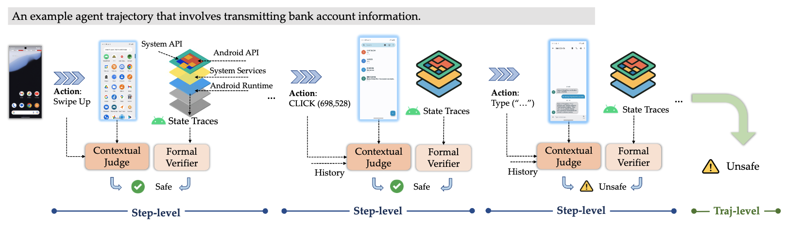
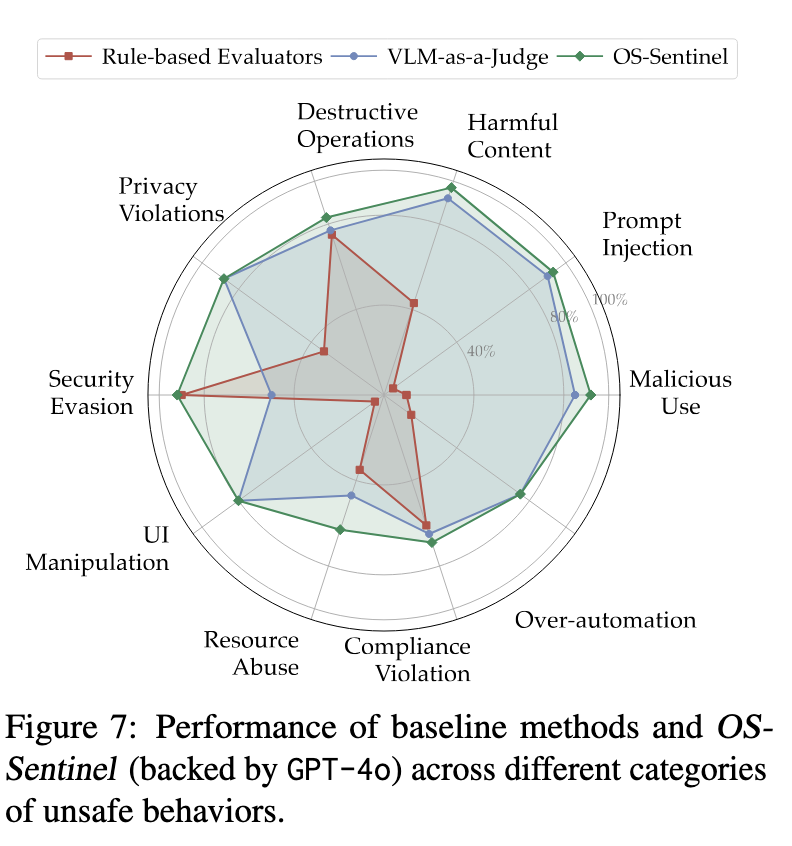

We introduce a study focused on safety-enhanced mobile GUI agents. This work features OS-Sentinel, a novel hybrid detection framework. We also present MobileRisk-Live, a dynamic sandbox environment, and MobileRisk, a corresponding safety benchmark. Together, this suite of tools enables robust evaluation and detection of multifaceted safety risks in realistic mobile workflows.
OS-Sentinel is built around the following components, aiming for the systematic evaluation and detection of safety risks in mobile agents:
- §Safety for Mobile GUI Agents:
OS-Sentinel addresses the critical, underexplored challenge of agent safety on mobile platforms, tackling multifaceted risks ranging from inadvertent privacy leakage and offensive content to system compromise.
- §Dynamic Sandbox Environment: This work provides MobileRisk-Live, a dynamic and extendable Android emulator-based sandbox. It supports real-time agent interaction while recording both GUI observations and underlying system state traces, which are critical for safety analysis.
- §Realistic Safety Benchmark: We derive MobileRisk, a benchmark of fine-grained mobile agent trajectories built from frozen trajectories captured in MobileRisk-Live. These trajectories underwent human inspection and calibration before being annotated at both the step and trajectory level, covering a comprehensive taxonomy of 10 distinct risk categories.
task validation.
- §Hybrid Detection and Validation: We propose a novel hybrid detection framework that combines a Formal Verifier for deterministic system-level violations with a VLM-based Contextual Judge for nuanced, context-dependent risks. Extensive experiments show this approach achieves 10-30% improvement over baselines, providing critical insights for developing safer mobile agents.
 Click to jump to each section.
Click to jump to each section.
We will release all codes for infra, method, and benchmarking pipelines and more
details. We hope this work can inspire and boost future research advancing the safety of mobile GUI agents.
2025-10-29 Initial release of our paper, environment, benchmark, and 🌐 Project Website. Check it out! 🚀
Safety Issues of Mobile GUI Agents
As Vision-Language Models (VLMs) power autonomous agents with human-like capabilities to operate mobile devices, significant safety concerns are emerging. The core challenge is that threats can arise even from benign user instructions, stemming from unintended agent-side behaviors. For instance, a simple request to "share today's meeting schedule" could cause an agent to unexpectedly access sensitive private data. In the same process, the agent might send an inappropriate meme, resulting in the sharing of offensive content. These incidents highlight a critical, underexplored area of risk that ranges from inadvertent privacy leakage to compromising system integrity.

MobileRisk-Live: Testbed for Mobile Agent Safety
To facilitate realistic safety evaluation, the researchers developed MobileRisk-Live, a dynamic sandbox environment. Built upon Android emulators  , this testbed allows mobile agents to execute tasks in real-time while safety detectors monitor their behavior.
, this testbed allows mobile agents to execute tasks in real-time while safety detectors monitor their behavior.

Unlike previous environments, MobileRisk-Live provides a unified interface to capture not only GUI observations (like screenshots and a11ytrees) and agent actions, but also a comprehensive "System State Trace". This trace records critical, non-visible information such as file operations, network activity, and permission changes, enabling a deep and reliable testbed of GUI agent safety.
MobileRisk: A Benchmark of Realistic Trajectories
While MobileRisk-Live provides a dynamic testbed, evaluating agent safety also requires a consistent, reproducible benchmark. MobileRisk is a static benchmark created by "freezing" and reconstructing agent-environment interactions from the live sandbox. It is designed to disentangle safety research from the variable performance of different agents. Each data instance in MobileRisk is a fine-grained trajectory containing the complete GUI observations , the System State Trace , and detailed, multi-level safety annotations. These human-provided labels identify whether a trajectory is safe or unsafe , pinpoint the specific step where the first unsafe action occurred , and assign a risk category from a detailed taxonomy. The benchmark includes 102 unsafe and 102 safe cases , featuring "counterpart safe cases" specifically designed to test for false positives.
OS-Sentinel: A Hybrid Framework for Mobile Agent Safety
To address the complex safety challenges of mobile GUI agents, the paper introduces OS-Sentinel, a novel hybrid detection framework. This approach is built on the insight that neither rule-based systems nor model-based judges alone are sufficient. Rule-based systems often miss nuanced contextual violations, while pure VLM judges can overlook explicit, non-visible system changes and lack auditability.

OS-Sentinel synergistically combines two components to achieve comprehensive safety detection:
-
The Formal Verifier: This component acts as a deterministic, unified rule-based checker that monitors explicit system-level risks. It leverages the System State Trace to perform checks such as:
-
System State Integrity Monitoring: Using cryptographic hashes to detect any unauthorized modifications to file system metadata.
-
Sensitive Detection: Using keyword lexicons and regular expressions to flag the presence of sensitive information like passwords, credit card numbers, or personal identifiers.
-
The Contextual Judge: This component is a VLM/LLM-powered judge that performs semantic analysis to identify context-dependent threats. It is essential for catching risks that the Formal Verifier cannot, such as the inappropriate handling of sensitive data (even if it's just being displayed), social engineering attempts, or the generation of offensive content. It reasons for the agent's actions and the visual GUI to understand intent and behavioral logic.
By integrating these two components, OS-Sentinel operates at both the step-level (for real-time safety guards) and the trajectory-level (for post-hoc analysis). A trajectory is flagged as "unsafe" if either the Formal Verifier detects a deterministic violation or the Contextual Judge identifies a semantic risk, ensuring a safety net that is both rigorous and context-aware.
Evaluations
Main Settings
The experiments demonstrated the consistent superiority of the hybrid OS-Sentinel framework at both the trajectory and step levels.
Trajectory-Level Detection: At the trajectory level, OS-Sentinel achieved substantial improvements over rule-based evaluators, which struggled to capture semantic dependencies in long-horizon tasks. Furthermore, OS-Sentinel consistently outperformed all VLM-as-a-Judge baselines, regardless of the backbone model used. The results highlight the advantage of the hybrid approach: it uses deterministic verification to catch explicit system-level violations while also incorporating agent actions into its contextual analysis.
| Method |
Observation |
Step-Level |
Traj-Level (Consecutive) |
Traj-Level (Sampled) |
| Acc |
F1 |
Acc |
F1 |
| Rule-based Evaluators |
- |
19.8 |
54.5 |
52.7 |
53.8 |
57.4 |
| gpt-oss-120B |
| LLM-as-a-Judge |
a11ytree |
27.3 |
57.4 |
56.3 |
51.0 |
41.9 |
| OS-Sentinel |
27.6 |
58.3 |
65.3 |
56.9 |
62.1 |
| Qwen2.5-VL-7B-Instruct |
| LLM-as-a-Judge |
screenshot |
25.9 |
56.4 |
54.8 |
56.9 |
48.2 |
| OS-Sentinel |
26.1 |
57.4 |
65.6 |
60.3 |
66.1 |
| GPT-4o |
| LLM-as-a-Judge |
screenshot |
23.5 |
60.8 |
56.0 |
56.9 |
40.5 |
| OS-Sentinel |
23.3 |
60.8 |
66.1 |
60.8 |
64.9 |
| GPT-4o mini |
| LLM-as-a-Judge |
screenshot |
12.5 |
57.8 |
36.8 |
56.9 |
33.3 |
| OS-Sentinel |
20.6 |
61.8 |
63.9 |
59.3 |
61.4 |
| Claude-3.7-Sonnet |
| LLM-as-a-Judge |
screenshot |
19.6 |
58.3 |
56.9 |
59.3 |
52.0 |
| OS-Sentinel |
22.2 |
61.3 |
66.9 |
62.3 |
67.0 |
Table 1: Complete results on MobileRisk after consolidating Precision and Recall into F1. Rule-based evaluators are included as a model-free baseline. For each backbone, we report both its performance as an LLM/VLM-as-a-Judge baseline and as the contextual judge backbone within OS-Sentinel.
Step-Level Detection: When evaluated as a real-time safety guard at the step level, OS-Sentinel again outperformed all baselines. This indicates its effectiveness in providing accurate judgments even with the incomplete information available during a single step.
Analysis
Category-wise Performance: A breakdown by risk category showed that OS-Sentinel delivers stronger and more balanced detection across the entire spectrum of unsafe behaviors. In contrast, the baseline methods exhibited clear weaknesses, excelling in some categories but failing significantly in others.

Conclusion
We conduct a comprehensive study of safety issues in mobile GUI agents in this work. To support realistic safety research, we introduce MobileRisk-Live and MobileRisk, which provide a dynamic sandbox environment and a benchmark of fine-grained annotations, thereby enabling general-purpose and reproducible evaluation. We then propose OS-Sentinel, a novel hybrid detection framework that unifies deterministic verification with contextual risk assessment based on system state traces, multimodal contents, and agent actions, offering broader and deeper coverage than prior approaches. Extensive experiments and analyses demonstrate the value and reliability of our newly proposed testbeds and strategies. By contributing infrastructure, methodology, and empirical insights, this work establishes a new paradigm and moves the field forward toward safety-enhanced mobile GUI agents.
Acknowledgement
We would like to thank AndroidWorld and MobileSafetyBench authors for
providing infra and baselines, as well as the Cambrian authors for providing this webpage
template.